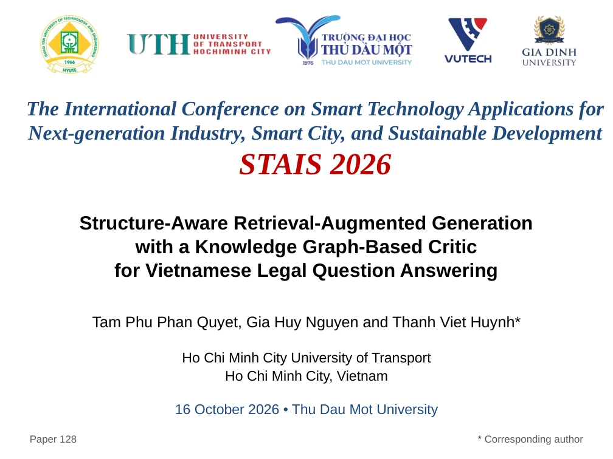

RAG · Knowledge Graph
LEGAL IT CHATBOT
Đồng phát triển chatbot pháp luật tiếng Việt: chunking Điều–Khoản–Điểm, hybrid retrieval và Critic Agent kết nối Neo4j. Đánh giá khóa luận trên 301 câu hỏi ghi nhận Legal Completeness Rate 81,33%, so với 43,77% của Naive RAG.
QdrantBM25 / RRFNeo4j
Xem dự án